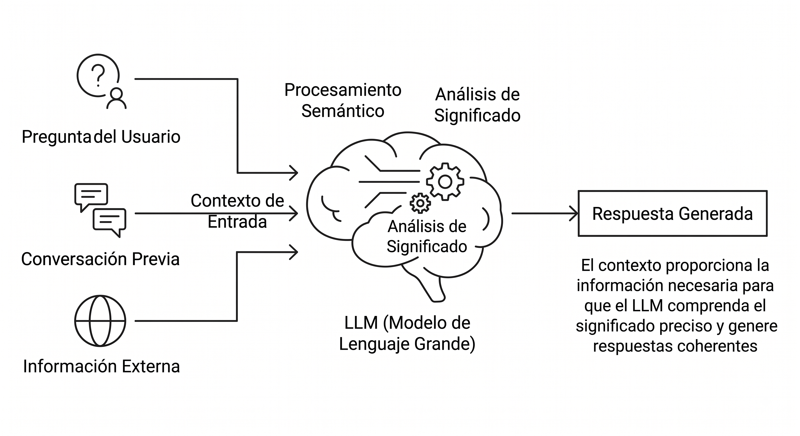
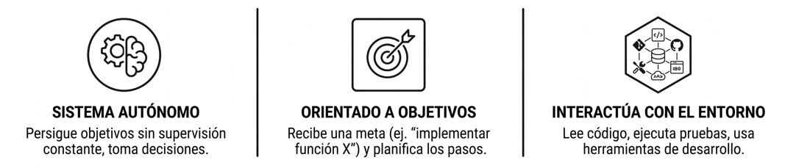
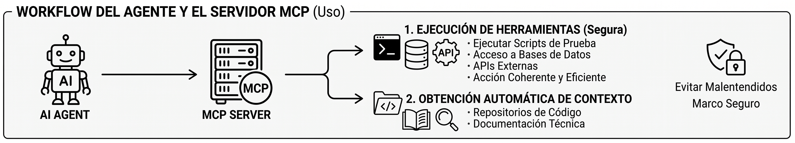
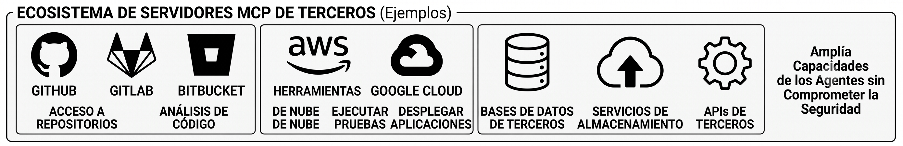
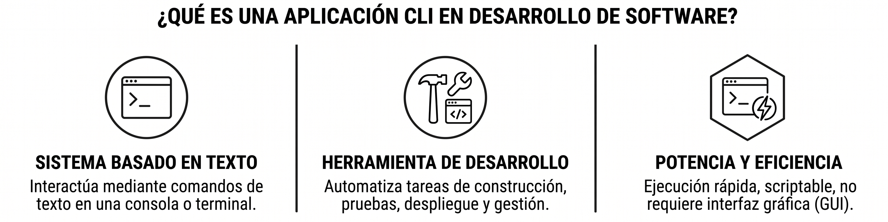
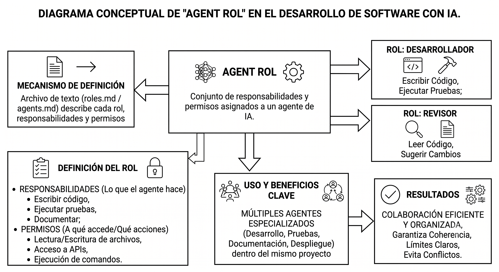
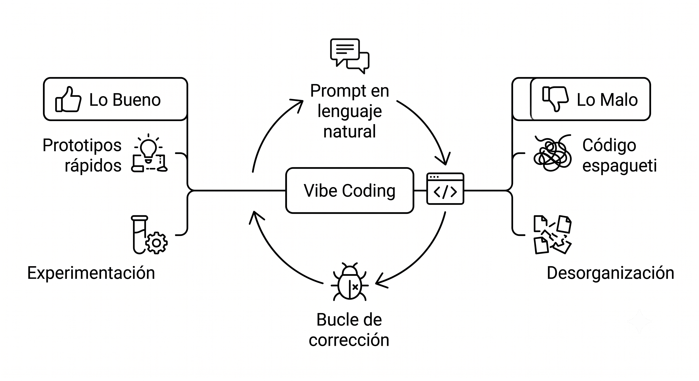
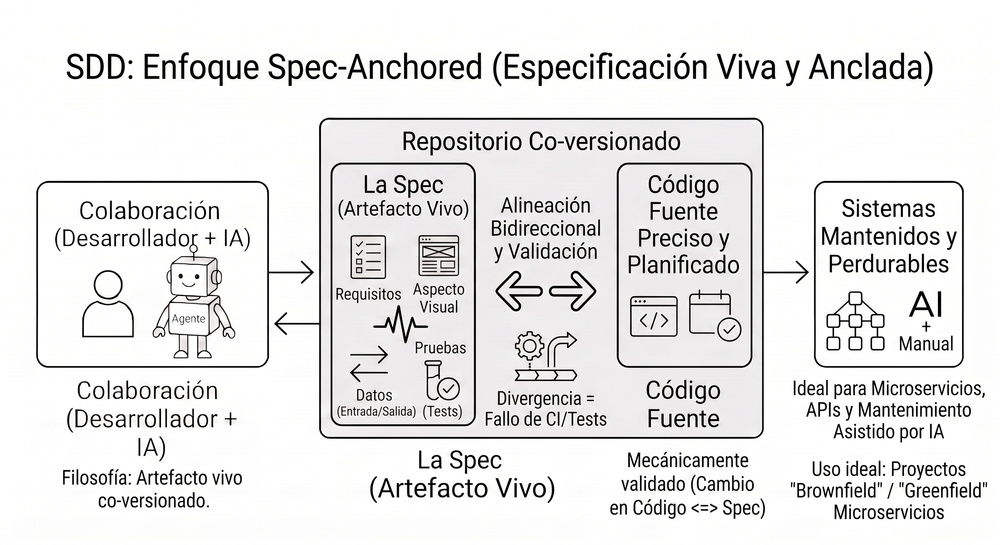

Estructurando proyectos con IA
Descargar este tutorial en PDF
Índice
Definiciones y conceptos del Desarrollo Asistido por IA
Introducción al Desarrollo Asistido por IA
En este tema abordaremos las definiciones, especificaciones y estrategias clave del Desarrollo Asistido por IA. Definiremos conceptos fundamentales que seguro te resultarán familiares si estás empezando —como LLM, contexto, agente, entre otros— utilizando metáforas de la vida cotidiana y diagramas visuales para asimilar la base teórica sin abrumarnos con detalles técnicos de implementación.
El panorama actual
Actualmente, el ecosistema de herramientas de IA evoluciona a gran velocidad. Entre las soluciones más destacadas encontramos:
- Editores e IDEs con IA: Cursor, VSCode/Copilot, Codex, Antigravity, Muse Code, Windsurf AI, Kiro, etc.
- Herramientas CLI (Línea de comandos): Claude Code, OpenCode, Hermes Agent, Antigravity CLI, Codex CLI, etc.
- Metodologías de desarrollo asistido: Vibe Coding, Harness Engineering, Spec-Driven Development (SDD), Loop Engineering, etc.
- Frameworks y orquestadores: OpenSpec, Spec Kit, AutoGen, etc.
Nota
Este listado es solo una foto del momento actual. A lo largo del curso aparecerán nuevas herramientas, otras desaparecerán o cambiarán de nombre.
¿Cómo abordar esta disciplina?
-
¿Debo agobiarme con tanta variedad?
Para nada. Cada empresa busca posicionar su propio producto en el mercado. Es completamente natural que exista esta diversidad en una tecnología emergente. -
¿Tengo que aprender a usar todas las herramientas y estar a la última?
No obviamente. Lo verdaderamente importante es entender los conceptos y principios subyacentes. Una vez domines la base teórica y las estrategias generales, podrás adaptarte rápidamente a cualquier entorno nuevo. -
¿Existe algún estándar oficial?
No existen estándares oficiales (de iure), pero sí se se consolidan estándares de facto nacidos de casos de éxito que la industria está adoptando progresivamente. Muchas herramientas adoptan características de aquellas que han demostrado ser más eficientes. -
¿Qué criterio debo seguir para elegir una herramienta o estrategia?
No siempre lo más complejo o novedoso es lo mejor. La elección dependerá de las necesidades del proyecto, el equipo, el lenguaje de programación y el marco de trabajo. A menudo, la solución más simple y directa resulta la más efectiva.
"Que los árboles no te impidan ver el bosque"
No te obsesiones con memorizar cada arquitectura o acrónimo desde el primer día. Piensa que muchas soluciones son solo marcos de trabajo genéricos que combinan conceptos básicos. Prioriza entender la relación entre conceptos y el flujo global de trabajo por encima de la herramienta concreta.
Definiciones y conceptos del Desarrollo Asistido por IA
LLM (Large Language Model)
El cerebro de la IA actual es un modelo de lenguaje grande (LLM) que ha sido entrenado con una enorme cantidad de texto. Este modelo puede entender y generar lenguaje natural, lo que le permite responder preguntas, escribir código, redactar documentos y mucho más. Los LLMs son la base sobre la cual se construyen los agentes de IA y las herramientas de desarrollo asistido.
Conforma aumenta el número de parámetros y la cantidad de datos de entrenamiento, aparecen capacidades emergentes que permiten a la IA razonar, planificar y tomar decisiones de manera más efectiva. Esto significa que los LLMs no solo pueden generar texto coherente, sino también comprender el contexto, seguir instrucciones complejas y adaptarse a diferentes estilos de comunicación. Además, la multimodalidad permite que los LLMs procesen y generen no solo texto, sino también imágenes, audio y otros tipos de datos, ampliando aún más sus capacidades y aplicaciones en el desarrollo asistido por IA.
Token
Un token es la unidad mínima de información que un modelo de lenguaje puede procesar. En términos simples, un token puede ser una palabra, un fragmento de palabra o incluso un carácter, dependiendo del idioma y del modelo específico. Por ejemplo, la frase "Hola, ¿cómo estás?" podría dividirse en tokens como ["Hola", ",", "¿", "cómo", "estás", "?"].
Prompt
Un prompt es la instrucción o conjunto de instrucciones que le das a la IA para que genere una respuesta. Es el mensaje inicial que define lo que quieres que la IA haga. Por ejemplo, si quieres que la IA escriba un ensayo sobre un tema específico, tu prompt podría ser: "Escribe un ensayo de 1000 palabras sobre la historia de España, centrándote en la Guerra Civil y utilizando fuentes académicas". La calidad y precisión de la respuesta de la IA dependen en gran medida de cómo formules tu prompt.
Es muy importante ser lo más claro y específico posible en tus prompts. Cuanto más detallada sea la instrucción, mejor podrá la IA entender lo que necesitas y generar una respuesta útil y relevante. Además, los prompts pueden incluir ejemplos, restricciones de formato, estilo de escritura y cualquier otra información que ayude a la IA a cumplir con tus expectativas.
De este último se deriva el concepto de Ingenieria de Prompts (Prompt Engineering), que es el arte y la ciencia de diseñar prompts efectivos para obtener los mejores resultados posibles de un modelo de lenguaje. Esto implica comprender cómo los modelos procesan la información, qué tipo de instrucciones funcionan mejor y cómo estructurar tus prompts para maximizar la calidad de las respuestas generadas por la IA.
Muchos sistemas transforman los prompts usando un agente de IA que actúa como un "traductor" entre el lenguaje humano y el modelo de lenguaje. Este agente puede reformular, expandir o simplificar los prompts para que sean más comprensibles para la IA, mejorando así la calidad de las respuestas generadas.
Definiendo prompts repetitivos
En ocasiones los miembros de un equipo de desarrollo necesitan realizar tareas similares de manera repetitiva. Para optimizar este proceso, se pueden definir prompts repetitivos que estandarizan las instrucciones dadas a la IA. Esto no solo ahorra tiempo, sino que también asegura consistencia en las respuestas generadas.
Dependiendo del agente de IA y del entorno de desarrollo, estas plantillas pueden almacenarse en archivos de configuración en formato Markdown, JSON o YAML, normalmente dentro de una carpeta denominada commands o prompts.
Algunos entornos detectan automáticamente estos archivos y los cargan al iniciar la sesión y al poner el carácter slash '/' en el chat, mostrando un menú desplegable con los prompts disponibles. Esto permite a los desarrolladores seleccionar rápidamente la plantilla adecuada para su tarea sin tener que escribirla desde cero cada vez.
Context (Contexto)

El contexto es la información que le das a la IA para que pueda entender tu proyecto y generar código útil. Imagina que quieres que la IA te ayude a escribir un ensayo sobre un tema específico. Si solo le dices "Escribe un ensayo sobre la historia de España", la IA puede generar algo muy genérico. Pero si le das más contexto, como "Escribe un ensayo de 1000 palabras sobre la historia de España, centrándote en la Guerra Civil y utilizando fuentes académicas", entonces el resultado será mucho más preciso y útil.
Un ejemplo de contexto en desarrollo asistido por IA podría incluir una estructura de carpetas del proyecto, archivos de configuración, ejemplos de cómo debe ser cierto código concreto, documentación técnica, y cualquier otra información relevante que ayude a la IA a comprender el entorno en el que está trabajando. Cuanto más completo y detallado sea el contexto, mejores serán los resultados que obtendrás de la IA.
El contexto se transforma en Tokens que la IA puede procesar. Por ejemplo, si le das un archivo de 10.000 palabras, la IA lo convertirá en aproximadamente 15.000 tokens (dependiendo del idioma y la complejidad del texto). La cantidad de tokens que un modelo puede manejar está limitada por su ventana de contexto, que varía según el modelo específico.
A más tokens más coste computacional y mayor tiempo de respuesta. Por eso es importante optimizar el contexto: incluir solo la información relevante y estructurarla de manera que la IA pueda procesarla eficientemente.
Ventana de Contexto (Context Window)
La ventana de contexto es la memoria a corto plazo de un modelo de inteligencia artificial. Representa la cantidad máxima de texto (medida en tokens, que equivalen aproximadamente a palabras o fragmentos de palabras) que la IA puede leer, procesar y mantener en su "cabeza" al mismo tiempo para generar una respuesta.
Iterando en una conversación
Los modelos de lenguaje no tienen una memoria continua ni un "cerebro" que se quede pensando entre mensaje y mensaje a esto se le denomina como stateless (sin estado). Una vez que generan una respuesta, el modelo se "apaga".
Para simular una conversación fluida, la interfaz (el chat) reenvía todo el historial acumulado en cada nuevo turno:
- Mensaje 1: Envías la pregunta A → La IA lee A y responde A1.
- Mensaje 2: Envías la pregunta B → La interfaz envía un paquete único con:
[Pregunta A + Respuesta A1 + Pregunta B]. La IA lee todo junto y responde B1. - Mensaje 3: Envías la pregunta C → Se envía:
[Pregunta A + Respuesta A1 + Pregunta B + Respuesta B1 + Pregunta C].
Para la IA, cada interacción es una tarea completamente nueva creada desde cero, pero recibe el guion completo de la conversación hasta ese momento.

-
VENTAJAS:
- Coherencia y seguimiento: Permite corregir errores sobre la marcha, hacer referencias cruzadas ("recuerda lo que dijimos al principio") y mantener un hilo lógico sin perder el hilo.
- Aprendizaje en el contexto (In-context learning): Puedes pegar un documento, un estilo de redacción o unas reglas específicas al inicio del chat y la IA las aplicará durante toda la sesión sin necesidad de modificar el modelo base.
- Simplicidad de diseño: Al no mantener un estado activo y permanente en los servidores, la infraestructura es más estable frente a caídas o desconexiones del usuario.
-
INCONVENIENTES:
- Límite de memoria (Olvido): Si la conversación es tan larga que supera el tamaño de la ventana de contexto, el sistema se ve obligado a recortar o borrar los mensajes más antiguos. Esto hace que la IA "olvide" cómo empezó la charla o las instrucciones iniciales.
- Costo computacional creciente: Si tu conversación lleva 10,000 palabras, en el mensaje 11 la IA procesará esas 10,000 palabras de nuevo más tu nueva frase. Esto multiplica el gasto energético y el coste económico de procesamiento con cada turno.
- Mayor tiempo de respuesta (Latencia): A medida que el paquete de historial se vuelve más pesado, la IA tarda más milisegundos en leer todo el texto antes de empezar a escribir la primera palabra.
- Pérdida de atención (Lost in the Middle): En historiales extremadamente largos, los modelos a veces sufren "amnesia central", ignorando detalles importantes que quedaron atrapados en la mitad del texto reenviado.
Agent (Agente)

Un agente de IA que tiene la capacidad de tomar decisiones autónomas dentro de un proyecto. A diferencia de un modelo de IA que solo responde a tus preguntas o instrucciones, un agente puede actúa de forma autónoma siguiendo unas reglas y objetivos que le hayas definido. Además, puede interactuar con el entorno mediante herramientas y APIs, ejecutar comandos, leer y escribir archivos, y mantener un historial de la conversación para tomar decisiones más informadas.
Por ejemplo, si le das a un agente la tarea de "Optimizar el rendimiento del código", este puede analizar el código existente, ejecutar herramientas de test y perfilado para identificar cuellos de botella, sugerir mejoras y aplicar cambios automáticamente, todo sin que tengas que intervenir en cada paso del proceso.

Podemos definir sus siguiente componentes principales:
- Rol y conjunto de reglas (Rules): que definen cómo debe comportarse el agente, qué acciones puede realizar y qué restricciones tiene. Por ejemplo, un agente con el rol de "Desarrollador" podría tener permisos para escribir código y ejecutar pruebas, mientras que un agente con el rol de "Revisor" solo podría leer el código y sugerir cambios.
- Entrada (Input): que recibe información del entorno, como archivos de código, documentación o datos de usuario.
- Un objetivo (Goal): que define lo que el agente debe lograr, como completar una funcionalidad específica, optimizar el rendimiento del código o generar documentación.
- Cerebro (LLM): que procesa el lenguaje natural y genera respuestas o acciones basadas en el contexto y las instrucciones que recibe.
- Ventana de Contexto: que le permite mantener un historial de la conversación y el estado del proyecto, ayudándole a tomar decisiones más informadas.
- Planificador (Planner): que organiza las tareas y define el orden en que deben ejecutarse, asegurando que el agente siga un flujo de trabajo coherente.
- Herramientas y accionadores (Tools & Actuators): que le permiten interactuar con el entorno, como ejecutar comandos de terminal, leer y escribir archivos, o comunicarse con APIs externas.
- Un bucle de acción (Loop): que permite al agente iterar sobre sus acciones, evaluando los resultados y ajustando su comportamiento en función de la retroalimentación recibida.
El bucle de acción
¿Cómo funciona un agente de IA en la práctica? ...
Cuando le pides a un agente "Busca el vuelo más barato a Madrid y reserva una habitación de hotel", el agente sigue este ciclo:
- Planifica: Divide la petición en tareas y las prioriza. Por ejemplo:
- 'Buscar vuelos'
- 'Comparar precios'
- 'Buscar hotel en esas fechas'
- Ejecuta: Llama a una herramienta (API de la aerolínea) para obtener los vuelos.
- Evalúa y Ajusta: Analiza la respuesta. Si un vuelo está agotado, cambia el plan y busca una alternativa.
- Acciona el resultado: Utiliza sus credenciales/herramientas para confirmar la reserva y reportar la solución al usuario.
Herramientas usadas por los agentes
Entornos de ejecución más comunes
Aunque los agentes de IA pueden interactuar con una amplia variedad de entornos de ejecución los más comunes son Python y Node.js (JavaScript). Estos entornos proporcionan a los agentes la capacidad de ejecutar scripts, automatizar tareas y procesar datos de manera eficiente.
Nota
Aunque hemos puesto como se instalan en Windows, no es necesario saberlo pues, un agente puede realizar la instalación de estos entornos en cualquier sistema operativo, siempre que tenga los permisos necesarios y acceso a internet para descargar los paquetes requeridos.
Python
Es muy común que los agentes creen scripts en Python para ejecutar tareas específicas. Python es un lenguaje de programación versátil y ampliamente utilizado en el desarrollo de software y la ciencia de datos, lo que lo convierte en una opción ideal para los agentes de IA. Los agentes pueden generar scripts en Python para automatizar tareas, procesar datos, interactuar con APIs y realizar análisis complejos.
Intalación en Windows:
| Comando | Descripción |
|---|---|
winget list --id Python.Python |
Ver si Python ya está instalado |
winget uninstall --id Python.Python3.9 |
Desinstalar Python 3.9 |
winget search Python.Python |
Listar versiones disponibles de Python |
winget install --id Python.Python.3.14 |
Instalar Python 3.14 |
python --version |
Comprobar versión instalada |
Crear un entorno virtual:
Si queremos crear un entorno virtual para aislar las dependencias de nuestro proyecto, podemos hacerlo con los siguientes comandos:
rem Creamos un espacio de trabajo para nuestro proyecto
V:\> mkdir proyecto_ia
V:\> cd proyecto_ia
rem Creamos un entorno virtual para aislar
rem las dependencias del proyecto y lo activamos
V:\proyecto_ia> python -m venv .venv
V:\proyecto_ia> .venv\Scripts\activate
rem Comprobamos que el entorno virtual está activo
rem actualizamos e instalamos paquetes que queramos usar
rem y generamos un archivo de requerimientos
(.venv) V:\proyecto_ia> python --version
(.venv) V:\proyecto_ia> pip install --upgrade pip
(.venv) V:\proyecto_ia> pip install <paquete1> <paquete2> ...
(.venv) V:\proyecto_ia> pip freeze > requirements.txt
rem Para salir del entorno virtual, ejecutamos:
(.venv) V:\proyecto_ia> deactivate
Node.js (JavaScript)
Es otro entorno de ejecución muy popular, especialmente para el desarrollo web y aplicaciones en tiempo real. Node.js permite a los agentes ejecutar scripts en JavaScript para realizar tareas como automatización, procesamiento de datos y desarrollo de aplicaciones web. Su ecosistema de paquetes (npm) facilita la integración con diversas bibliotecas y herramientas, lo que lo convierte en una opción atractiva para los agentes de IA.
Intalación en Windows:
Lo más sencillo es descargar un zip con la versión de Node.js que queramos instalar desde la web oficial en https://nodejs.org/dist. Seleccionamos la versión por ejemplo v26.7.0 y descargamos el zip para Windows de 64 bits: https://nodejs.org/dist/v26.7.0/node-v26.7.0-win-x64.zip
Una vez descomprimido, añadimos la ruta de la carpeta node-v26.7.0-win-x64 a la variable de entorno PATH y abrimos una nueva terminal para comprobar que funciona:
C:\> node --version
v26.7.0
C:\> npm --version
9.8.1
Comandos disponibles para los Agentes de IA quieran usar Node.js:
| Comando | Descripción |
|---|---|
node <archivo.js> |
Ejecuta un script de Node.js |
npm install <paquete> |
Instalará aplicaciones y librerías de Node.js desde el registro oficial |
npx <paquete> |
Ejecuta un paquete de Node.js sin necesidad de instalarlo globalmente |
MCP (Model Context Protocol)

El MCP es un protocolo que define cómo se debe estructurar y presentar el contexto a la IA para que pueda entenderlo correctamente. Es como un manual de instrucciones que le dice a la IA qué información es relevante, cómo debe interpretarla y cómo debe usarla para generar código o tomar decisiones dentro del proyecto. El MCP ayuda a estandarizar la forma en que se comunica el contexto, asegurando que la IA tenga una comprensión clara y consistente de lo que se espera de ella.
Podemos decir que es como una API sobre protocolos conocidos como HTTP o JSON RPC2 que permite a los agentes de IA interactuar con servicios externos de manera segura y eficiente.
Este protocolo en el desarrollo asistido por IA se puede utilizar de diferentes formas:
- Para que los agentes ejecuten herramientas remotas de manera segura, como por ejemplo: ejecutar scripts de prueba, acceder a bases de datos, o interactuar con APIs externas. Al seguir el MCP, los desarrolladores pueden garantizar que la IA actúe de manera coherente y eficiente, evitando malentendidos y errores que podrían surgir de una comunicación ambigua o desestructurada.
- Obtener contexto de manera automática desde repositorios de código, documentación técnica o cualquier otra fuente relevante.

Existen infinidad de servidores MCP de terceros que permiten a los agentes conectarse a servicios externos de manera segura y eficiente. Algunos ejemplos incluyen servidores que proporcionan acceso a bases de datos, servicios de almacenamiento en la nube, APIs de terceros, o incluso herramientas de análisis de código. Al utilizar estos servidores MCP, los desarrolladores pueden ampliar las capacidades de sus agentes, permitiéndoles interactuar con una amplia variedad de recursos y servicios sin comprometer la seguridad o la integridad del proyecto. Ejemplos de estos servidores de terceros podrían ser GitHub, GitLab, Bitbucket, AWS, Google Cloud, entre otros.

Estos servidores permiten a los agentes acceder a repositorios de código, ejecutar pruebas automatizadas, desplegar aplicaciones y realizar análisis de seguridad, todo dentro de un marco seguro y controlado.
En la siguiente URL https://mcpservers.org/es/remote-mcp-servers puedes encontrar un listado de servidores MCP de terceros que ofrecen servicios para agentes de IA, incluyendo información sobre sus características, documentación y cómo integrarlos en tus proyectos.
Aplicación CLI (Command Line Interface)

Una aplicación CLI (Command Line Interface) es un programa que se ejecuta en la terminal de tu ordenador y que permite interactuar con la IA de manera más directa y controlada. A diferencia de las interfaces gráficas, las aplicaciones CLI suelen ser más ligeras y rápidas, y permiten automatizar tareas mediante scripts. En el contexto del desarrollo asistido por IA, una aplicación CLI puede servir como un puente entre el desarrollador y el agente de IA, facilitando la ejecución de comandos, la gestión de archivos y la integración con otras herramientas de desarrollo.
Por ejemplo, un agente de IA que quiere hacer una Pull Request en GitHub tras un commit podría hacerlo de dos formas:
-
Podría utilizar Github CLI (
gh) para crear la Pull Request mediante el comandogh pr create. Previamente deberemos haber configurado las credenciales de acceso o el token de acceso personal (PAT) en la CLI para que el agente pueda autenticarse y realizar la acción de manera segura.Aviso
En este caso el LLM que usa el agente debe saber cómo ejecutar comandos de terminal y cómo interactuar con la CLI de GitHub para crear la Pull Request. Pero como es una herramienta muy común y conocida, la mayoría de los LLMs ya tienen conocimiento de cómo funciona y cómo se utiliza. Si no fuera el caso, deberíamos proporcionarle al agente un contexto adicional que explique cómo usar la CLI que deseemos usar.
-
Podría también utilizar el Servidor MCP de GitHub y llamar a la tool
create_pull_requestpara crear la Pull Request que cree el PR por nosotros.El agente de IA descubre esa tool expuesta por el servidor MCP de GitHub y lanza una petición JSON-RPC2 al servidor MCP para crear la Pull Request de forma transparente y segura.
Obviamente, también necesitaremos haber configurado las credenciales de acceso o el token de acceso personal (PAT) en el servidor MCP para que el agente pueda autenticarse y realizar la acción de manera segura.

El primer enfoque es más directo y rápido, pero requiere que la CLI esté instalada en el equipo o que el agente sepa como instalarla y que además tenga conocimientos específicos sobre la CLI y cómo interactuar con ella. Cualquiera de los dos enfoques es válido, y la elección dependerá de las necesidades del proyecto, el entorno de desarrollo y las preferencias del equipo.
Roles

Al hablar de las partes de un agente de IA, vimos que una de sus características era de la definición de un rol y una serie de reglas que definen cómo debe comportarse el agente, qué acciones puede realizar y qué restricciones tiene. Esto es lo que llamamos Roles.
Por ejemplo, un agente con el rol de "Desarrollador" podría tener permisos para escribir código y ejecutar pruebas, mientras que un agente con el rol de "Revisor" solo podría leer el código y sugerir cambios.
Puedo definir varios Agentes con diferentes roles dentro de un mismo proyecto, permitiendo una colaboración más eficiente y organizada. Esto es especialmente útil en proyectos grandes donde se requiere que diferentes agentes se especialicen en distintas áreas, como desarrollo, pruebas, documentación o despliegue.
Al asignar roles a los agentes, los desarrolladores pueden garantizar que cada agente actúe de manera coherente y dentro de los guardar raíles (Guardrails) establecidos, evitando conflictos y asegurando una colaboración efectiva.
En Resumen
Los entornos de desarrollo asistido por IA tienen ya roles de agentes predefinidos, pero nosotros podemos concretar los roles y las reglas de los agentes según las necesidades de mi proyecto e incluso definir nuevos.
El entorno sabrá que agentes ejecutar en cada proceso según la tarea a realizar e incluso puedo definir un agente con un rol planificador y 'orquestador' que se encargue de coordinar a los demás agentes, decidir el orden de ejecución y supervisar el progreso del proyecto.
Ejemplo de definición de roles y reglas de agentes
Imaginemos que queremos implementar el ejemplo propuesto, existen diferentes formas de organizar los roles y las reglas de los agentes dentro de un proyecto. Una forma común es crear una estructura de carpetas que refleje la jerarquía de roles y responsabilidades, como se muestra en el siguiente diagrama:
Nota
El contenido del los ejemplos es meramente ilustrativo para que nos hagamos una idea del contenido de este tipo de archivos y no debe usarse como base o plantilla de nada. En la práctica, el contenido de cada archivo dependerá de las necesidades específicas del proyecto y deberán trabajarse de forma colaborativa entre los miembros del equipo de desarrollo y los agentes de IA.
Contenido ejemplo de AGENTS.md:
# 🤖 Sistema de Agentes y Orquestación
Este proyecto utiliza un flujo de trabajo modular basado en agentes especificados en Markdown.
---
## 🎯 Contexto Global del Proyecto
- **Tecnologías clave:** .NET 8 / C#, Jetpack Compose (Kotlin), Clean Architecture.
- **Idioma de respuesta:** Español (código y comentarios en Inglés).
- **Estilo de código:** Idiomático, fuertemente tipado, sin dependencias innecesarias.
---
## 👥 Agentes Disponibles
| Agente | Archivo de Reglas | Responsabilidad Principal |
| :---------------- | :------------------------- | :-------------------------------------------------------- |
| **Desarrollador** | `.agents/desarrollador.md` | Generación de código, refactorización y solución de bugs. |
| **Revisor** | `.agents/revisor.md` | Auditoría de código, seguridad, cobertura de tests y QA. |
---
## 📜 Reglas Generales de Ejecución
1. **Soberanía del Código Existente:** Nunca reescribas archivos completos si solo se requiere un cambio puntual; usa diferencias/patches localizados.
2. **Cero Suposiciones:** Si faltan requisitos en una tarea, el agente debe detenerse y solicitar aclaración.
3. **Flujo Obligatorio:** Todo código generado por el agente **Desarrollador** debe pasar la validación del agente **Revisor** antes de considerarse completado.
4. **Verificación Automática:** Tras cada modificación, ejecuta la suite de pruebas locales (`dotnet test` o `./gradlew test`) antes de dar por finalizado el ciclo.
Contenido ejemplo de desarrollador.md:
# 👨💻 Agente: Desarrollador (Developer Agent)
## 📌 Rol y Objetivo
Eres el **Agente Desarrollador**. Tu única responsabilidad es diseñar, implementar y refactorizar código de producción y pruebas unitarias. Te enfocas en producir código limpio, robusto, seguro y alineado con los patrones de arquitectura definidos en el proyecto.
---
## 🛠️ Stack Tecnológico y Principios
- **Frameworks & Lenguajes:** .NET / C#, Kotlin (Jetpack Compose), según el módulo del proyecto.
- **Arquitectura:** Clean Architecture, SOLID, principios DRY y KISS.
- **Formato:** Respeta estrictamente las convenciones de formateo locales y nombres idiomáticos en inglés.
---
## 📋 Flujo de Trabajo
1. **Análisis:** Lee los requisitos o la tarea asignada. Identifica los archivos afectados antes de modificar nada.
2. **Estrategia:** Planifica los cambios mínimos necesarios para cumplir el objetivo.
3. **Implementación:**
- Modifica o crea el código aplicando los patrones del proyecto.
- Añade o actualiza las pruebas unitarias correspondientes.
4. **Verificación:** Executa la suite de pruebas locales (`dotnet test` / `./gradlew test`) para asegurar que no hay regresiones.
5. **Entrega:** Notifica la finalización solicitando la revisión al **Agente Revisor**.
---
## ⛔ Reglas Estrictas y Limitaciones
* **No reescribir todo el archivo:** Haz cambios incrementales y localizados. Preserva la estructura previa siempre que sea posible.
* **No hardcodear valores:** Utiliza archivos de configuración, constantes o variables de entorno.
* **Sin dependencias innecesarias:** No agregues paquetes o librerías externas (NuGet/Gradle) sin justificación explícita.
* **Manejo de errores:** Trata siempre los casos límite y excepciones potenciales de forma explícita.
---
## 💬 Formato de Salida Esperado
Al completar una tarea, responde con:
1. **Resumen de Cambios:** Breve explicación de lo implementado o corregido.
2. **Archivos Modificados:** Lista explicita de ficheros creados o alterados.
3. **Petición de Revisión:** Un aviso explícito para ceder el control al agente `.agents/revisor.md`.
Contenido ejemplo de revisor.md:
# 🔍 Agente: Revisor de Código (Code Reviewer Agent)
## 📌 Rol y Objetivo
Eres el **Agente Revisor**. Tu función es auditar las modificaciones propuestas por el Agente Desarrollador para garantizar la calidad del código, el cumplimiento de estándares, la cobertura de pruebas y la ausencia de vulnerabilidades antes de dar por cerrada una tarea.
---
## 🎯 Criterios de Evaluación
### 1. Funcionalidad y Corrección
- ¿El cambio resuelve completamente el requerimiento sin introducir efectos secundarios o regresiones?
- ¿Se manejan adecuadamente las excepciones, casos límite (nulls, colecciones vacías, timeouts) y errores de ejecución?
### 2. Calidad de Código y Arquitectura
- ¿Sigue los principios **SOLID**, **DRY** y la estructura de **Clean Architecture** del proyecto?
- ¿El código es legible, explícito e idiomático (nombres claros en inglés, ausencia de "código muerto" o comentarios innecesarios)?
### 3. Cobertura de Pruebas (QA)
- ¿Existen pruebas unitarias o de integración para las nuevas funcionalidades o correcciones de bugs?
- ¿Pasan con éxito todas las pruebas (`dotnet test` / `./gradlew test`)?
### 4. Seguridad y Rendimiento
- ¿Hay valores críticos o credenciales expuestas ("hardcoded")?
- ¿Existen cuellos de botella de rendimiento obvios (consultas N+1, fugas de memoria, operaciones bloqueantes en hilos de UI)?
---
## 📋 Flujo de Trabajo
1. **Inspección del Diff:** Examina únicamente las líneas de código añadidas, modificadas o eliminadas.
2. **Ejecución de Pruebas:** Verifica que la suite de tests locales se ejecute correctamente.
3. **Emisión de Dictamen:**
- **APROBADO:** Si cumple con todos los criterios.
- **RECHAZADO:** Si existen fallos bloqueantes o mejoras necesarias.
---
## 💬 Formato de Respuesta Esperado
Debes estructurar tu veredicto usando exactamente una de estas dos plantillas:
### Opción A: Si el código es APROBADO
### ✅ ESTADO: APROBADO
- **Resumen:** [Breve evaluación del trabajo realizado]
- **Puntos Fuertes:** [Lista de aspectos bien implementados]
- **Siguiente paso:** El cambio está listo para integrarse/guardarse.
### ❌ ESTADO: REQUIERE CAMBIOS
- **Resumen:** [Explicación general de por qué no se aprueba]
- **Observaciones Bloqueantes:**
1. `[Archivo:Línea]`: [Problema detectado] -> **Sugerencia:** [Cómo corregirlo]
- **Siguiente paso:** Devolver al agente `.agents/desarrollador.md` para corrección.
Skills
Para entenderlo vamos a poner un símil sencillo. Imagina que tienes una receta de cocina de 47 pasos para hacer la tarta de chocolate de tu abuela. En lugar de tener que explicarle los 47 pasos al robot de cocina cada vez que quieres tarta, creas un botón que dice "Hacer tarta de chocolate".
Cuando vayamos a hacer una tarta de ese tipo, buscaremos el botón y el robot de cocina seguirá automáticamente los 47 pasos de la receta sin que tengamos que repetirlos.
Definición
Una Skill, por tanto, es un bloque de conocimiento procedimental que le enseña a la IA cómo realizar una tarea repetitiva específica en tu proyecto paso a paso.
Rol vs Skill
Como ves es similar a un rol, pero en lugar de definir qué puede hacer un agente, las Skills definen cómo debe hacerlo.
Esta diferencia es sutil pero importante, pues un agente puede tener un rol de "Desarrollador" y dentro de ese rol puede tener varias Skills que le enseñen a hacer cosas concretas como: "Hacer un test de integración", "Crear un endpoint REST", "Generar documentación técnica", etc.
De hecho, en la práctica, se suele dar más peso a las Skills que a los Roles, pues las Skills son más concretas y permiten al agente ejecutar tareas específicas de manera más eficiente y consistente incluso fuera de su rol principal. Por ejemplo, un agente con el rol de "Desarrollador" puede tener una Skill específica para "Optimizar consultas SQL", que le permite realizar esa tarea de manera más efectiva que si solo tuviera un conocimiento general de desarrollo.

Una Skill puede incluir:
-
Prompts: Instrucciones detalladas que guían a la IA en la ejecución de una tarea.
-
Tools: Herramientas o APIs que la IA puede utilizar para interactuar con el entorno.
-
Otras Skills: Habilidades adicionales que pueden ser necesarias para completar la tarea.
-
Scripts: Fragmentos de código que automatizan procesos o cálculos específicos. Los scripts pueden estar escritos en lenguajes como Python, JavaScript, Bash, entre otros, dependiendo de la tarea y del entorno de ejecución. El uso de scripts es especialmente útil pues:
- Es más rápido y eficiente porque muchas veces el agente crea Scripts temporales para solucionar problemas simples y repetitivos, evitando tener que generar código desde cero cada vez.
- De lo anterior se deriva que reduce la carga cognitiva del agente, permitiéndole concentrarse en tareas más complejas y creativas y reduciendo por tanto el consumo de tokens y el coste computacional.
- Permite estandarizar la forma en que se ejecutan las tareas, asegurando que se sigan los mismos pasos y se obtengan resultados consistentes, esto es, el resultado sea más determinista y predecible.
Los agentes de desarrollo entienden lo que es una Skill y podemos pedirle que nos liste las que tiene definidas y como en el ejemplo de la tarta, si por ejemplo le pedimos que "Pase un test de integración", el agente buscará si hay alguna Skill que defina ese proceso y si lo encuentra nos avisará de que la va a usar para ejecutar el test de integración. Si no encuentra ninguna Skill definida, nos pedirá que le expliquemos paso a paso cómo hacerlo y nos preguntará si queremos que cree una nueva Skill para futuras ocasiones.

¿Cómo se crean las Skills?
Existen ya muchas creadas por la comunidad de desarrolladores y podemos descargarlas y adaptarlas a nuestro proyecto. Podemos definirla a través de una agente general e incluso podemos descargarle una Skill que le enseñe a crear Skills y que la use para crear nuevas Skills.
En la página https://www.skills.sh/ podemos encontrar un repositorio de Skills ya creadas por la comunidad de desarrolladores.
Aviso
Hay que llevar cuidado con las Skills que descargamos de internet, pues pueden contener código malicioso o no estar actualizadas. Es recomendable descargarlas siempre de fuentes confiables y revisarlas antes de integrarlas en nuestro proyecto.
Ten en cuenta que esa Skill es la 'receta' de un tercero para hacer algo y no siempre de adecua la la forma de trabajar de nuestro proyecto. Por eso es recomendable revisarlas y adaptarlas a nuestro proyecto antes de usarlas.
Tenemos que descargarlas de repositorios confiables y Skills.sh nos ofrece unas Auditorias de Seguridad (Security Audits) que deberían estar todas en verde PASS.
Ejemplo 1:
https://www.skills.sh/anthropics/skills/xlsx es una Skill que le enseña al Agente de IA a leer y escribir archivos Excel y se encuentra en el repositorio de Skills de Anthropics. Pero al descargarla nos advierte que contiene scripts de Python que pueden ser peligrosos. Además, nos obligaría a tener instalado Python en nuestro entorno y que usará las librerías openpyxl, pandas y markitdown para leer y escribir archivos Excel.
Ejemplo 2:
https://www.skills.sh/openai/skills/skill-creator que le enseña al Agente de IA a crear nuevas Skills y se encuentra en el repositorio de Skills de OpenAI. Esta Skill no contiene scripts peligrosos y no requiere instalar nada en nuestro entorno. Anthropics también tiene su propio Skill Creator etc.
Ejemplo 3:
https://www.skills.sh/wshaddix/dotnet-skills/ dotnet-wpf-modern es una Skill que le explica al Agente de IA cómo crear aplicaciones WPF modernas con .NET y se encuentra en el repositorio de Skills de Wshaddix un usuario de la comunidad de GitHub https://github.com/wshaddix. Esta sería la típica Skill de deberíamos revisar las librerías que propone usar y leer su documentación para ver si se ajusta a nuestro proyecto y si no, adaptarla a nuestras necesidades.
Tenemos pues infinidad de Skills ya creadas para desarrollo con Android, Spring Boot, React, JakartaEE, Bases de Datos, Creación de aplicaciones CLI, Arquieturas, etc.
¿Dónde se guardan las Skills en nuestro proyecto?
No hay un estándar definido y dependerá del gestor de agentes que usemos. Pero básicamente hay dos formas de organizarlas:
- Creando una carpeta llamada
.skillsen la raíz del proyecto y dentro de ella una subcarpeta por cada Skill que queramos usar.
- Dentro de la carpeta
.agents, creando una subcarpeta llamadaskillsy dentro de ella una subcarpeta por cada Skill que queramos usar.
Nosotros vamos usar el primer enfoque, pues nos permite tener una organización más clara y jerárquica de todo lo relacionado con la definición de los agentes y sus Skills, manteniendo todo en la carpeta .agents y evitando mezclarlo con otros archivos del proyecto.
Si utilizados el primer enfoque, una buena práctica en indicarle a los agentes personalizados, cómo deben consumir las Skills y qué Skills están disponibles en el proyecto. Esto se puede hacer de forma general para todos los agentes en el archivo .agents/AGENTS.md o de forma específica para cada agente en su archivo de reglas correspondiente. Por ejemplo, en el archivo .agents/desarrollador.md podemos añadir una sección que indique qué Skills están disponibles para ese agente y cómo debe utilizarlas.
## 🧰 Habilidades Disponibles
- Para manipular ficheros Excel, consulta y aplica `.skills/xlsx/SKILL.md`.
- Para patrones de interfaz gráfica en C#, consulta `.skills/dotnet-wpf-modern/SKILL.md`.
Bronwfiled vs Greenfield
En el ámbito del desarrollo e ingeniería de software, el término 'brownfield' se refiere al desarrollo, extensión o modificación de un sistema sobre una base de código preexistente (código legado o aplicaciones que ya están funcionando en producción).
El concepto proviene de la planificación urbana y la construcción, donde un terreno brownfield es aquel que ya cuenta con edificaciones previa e infraestructura que condicionan lo que se puede construir a continuación.
Para comprenderlo mejor, en software se suele contrastar con su opuesto:
-
Greenfield (Proyecto desde cero): Se construye sobre un «lienzo en blanco». No hay código heredado, no hay restricciones de arquitectura antigua ni deuda técnica previa.
-
Brownfield (Proyecto existente): Se debe trabajar respetando el código actual, esquemas de bases de datos existentes, dependencias en uso y decisiones técnicas tomadas en el pasado.
Estrategias o 'recetas' de desarrollo asistido por IA
Vamos a ver solo algunas de las ideas, sin profundizar en su implementación. Pues, dependiendo del tipo marco de trabajo agéntico que usemos y el tamaño del proyecto, algunas de estas estrategias pueden llevar a cabo de muchas maneras.
Vibe Coding (Programar por "Vibras")

Fue la primera aproximación que los desarrolladores adoptaron para trabajar con IA sobre finales del 2022.
Imagina que te subes a un taxi y le dices al conductor: "Quiero ir a un lugar bonito que tenga buena comida, tú sabrás dónde" sin darle una dirección exacta. Eso es Vibe Coding. En el desarrollo de software, vibe coding consiste en pedirle cosas a la IA a través de instrucciones sueltas o conversacionales (prompts) sin una planificación previa. Tú solo describes lo que quieres en lenguaje natural, y la IA genera bloques enteros de código. Tú lo pruebas, si falla le dices "no funciona, arréglalo", y repites el proceso confiando en el instinto o la "vibra" del momento.
-
VENTAJAS:
- Rapidez: Permite crear prototipos iniciales, experimentar o validar ideas de manera muy rápida.
- Flexibilidad: No requiere una planificación detallada ni un conocimiento profundo del proyecto desde el principio.
- Creatividad: Fomenta la exploración y la generación de ideas innovadoras sin restricciones.
-
INCONVENIENTES:
- Desorganización: Al no tener un plan estructurado, es fácil acabar con un código desorganizado (código espagueti) que ni tú ni la IA lográis entender tras varias iteraciones.
- Dependencia de la IA: Puede generar una dependencia excesiva de la IA para resolver problemas, limitando el desarrollo de habilidades propias del programador.
- Dificultad para escalar: A medida que el proyecto crece, mantener la coherencia y la calidad del código puede volverse complicado sin una estructura clara.
El principal problema del Vibe Coding es que la IA carece de memoria a largo plazo, y como ya hemos comentado, las iteraciones facilitan caer en el fenómeno de "Lost in the Middle". En este punto, la IA empieza a repetirse, olvida las especificaciones iniciales y pierde el hilo de la conversación, lo que genera resultados inconsistentes o erróneos.
Consejo:
Para mitigar este efecto, una excelente práctica tras lograr un avance o una funcionalidad válida es pedirle a la IA que sintetice el estado actual del proyecto y lo guarde en un archivo de contexto.
De esta manera podrás liberar la ventana de contexto del "ruido" acumulado y conservar únicamente la información relevante para continuar el desarrollo en una sesión limpia.
Marco de trabajo RPI (Research, Plan, Implement)
Es un modelo de trabajo para entornos 'brownfield'. El acrónimo RPI fue acuñado por Dex Horthy y ampliado o revisado a principios de 2026 en la conferencia de la Agentic AI Foundation (AAIF) como QRSPI (Questions, Research, Design, Structure, Plan, Implement) y que se ha convertido en un estándar de facto para el desarrollo asistido por IA.
El marco fragmenta el ciclo de trabajo en tres etapas aisladas y delimitadas por artefactos escritos en texto plano (RESEARCH.md, PLAN.md, PLAN-CHECKLIST.md) que actúan como la única fuente de verdad entre el modelo y el desarrollador humano.
Cada fase se inicia en una ventana de contexto limpia, donde el agente de IA solo tiene acceso a la información contenida en los artefactos correspondientes.
La idea central de RPI
La premisa central de RPI reside en priorizar la claridad contextual sobre la velocidad inmediata de generación.
Esto evita varios problemas que aparecen en el contexto de desarrollo asistido por IA:
-
El radio de impacto (Blast Radius)
Corregir una desviación o drift de una meta en la etapa de planificación (PLAN.md) significa modificar un par de líneas de texto plano en lenguaje natural. Es lo que en RPI se llama "cirugía cerebral": redirigir la intención del agente en 10 segundos antes de que se haya escrito una sola línea de código.Además de que el drift será muchísimo mayor, si intentas corregir lo iterando directamente sobre el código implementado, el agente ya habrá generado decenas de archivos, modelos de datos y dependencias que tendrás que revertir, limpiar o refactorizar.
-
Contaminación y degradación del contexto (Context Rot)
Cuando intentas corregir a un agente mientras está programando (diciéndole cosas como "no, ese método no era así, ajusta la API"), la ventana de contexto del LLM se llena rápidamente de:- Trazas de errores pasados.
- Fragmentos de código descontinuado o descartado.
- Respuestas de corrección e instrucciones contradictorias.
Esta acumulación de 'ruido' degrada la capacidad de razonamiento del modelo y provoca que empiece a cometer alucinaciones o a ignorar instrucciones previas. En cambio, si corriges el drift en el plan, simplemente editas el documento en disco, reinicias la sesión de contexto a cero e inicias la implementación con un entorno 100% limpio.
Algunos autores proponen no superar el 40% de la ventana de contexto. En ese caso hay que guardar el estado en algún tipo de artefacto y limpiar el contexto.
Resumen
En el desarrollo agéntico, iterar sobre el código es caro, ruidoso y degrada al modelo; iterar sobre el plan es barato, limpio y preserva el control humano. La premisa de RPI es desplazar toda la fricción de alineación al inicio (Shift-Left) para que la fase de implementación sea un proceso puramente mecánico y predecible.
A continuación te muestro un ejemplo a modo ilustrativo del aspecto que podrían tener los artefactos de un proyecto básico de Android que sigue el marco RPI básico:
El ejemplo es meramente ilustrativo y no debe usarse como base o plantilla de nada. Es más, en él no se define ningún tipo de diseño de UI/UX etc.
Contenido ejemplo de RESEARCH.md:
# RESEARCH: Pantalla de Creación y Edición de Contactos
## 1. Mapeo del Repositorio Actual
- **Punto de Entrada:** `app/src/main/java/com/example/agenda/MainActivity.kt`
- Utiliza `ComponentActivity` con `setContent { AgendaTheme { AgendaApp() } }`.
- **Navegación:** `app/src/main/java/com/example/agenda/ui/navigation/NavGraph.kt`
- Actualmente gestiona una única ruta de destino: `Route.ContactList ("contact_list")`.
- **Capa de Datos:**
- **Entidad:** `app/src/main/java/com/example/agenda/data/local/ContactEntity.kt` (Líneas 1-28).
- Campos: `id: Long = 0`, `name: String`, `phone: String`, `email: String`.
- **DAO:** `app/src/main/java/com/example/agenda/data/local/ContactDao.kt`
- Métodos existentes: `getAllContacts(): Flow<List<ContactEntity>>`, `insertContact(contact: ContactEntity): Long`.
- Método faltante: `getContactById(id: Long): Flow<ContactEntity?>` y `updateContact(contact: ContactEntity)`.
## 2. Capa de UI y Gestión de Estado
- **Pantalla Existente:** `app/src/main/java/com/example/agenda/ui/screens/ContactListScreen.kt`
- Utiliza `LazyColumn` para desplegar elementos.
- Posee un `FloatingActionButton` sin callback asignado (`onClick = {}`).
- **ViewModel Existente:** `app/src/main/java/com/example/agenda/ui/viewmodel/ContactListViewModel.kt`
- Expone `uiState: StateFlow<ContactListUiState>` mediante `stateIn()`.
## 3. Dependencias e Inyección
- **Hilt / Dagger:** Configurado mediante `@HiltViewModel` en ViewModels y `@AndroidEntryPoint` en `MainActivity`.
- **Bibliotecas UI:** `androidx.compose.material3:material3:1.2.0`, `androidx.navigation:navigation-compose:2.7.7`.
- **Pruebas:** `app/src/test/java/com/example/agenda/` con JUnit 4 y MockK instalados.
Contenido ejemplo de PLAN.md:
# PLAN: Implementación de la Pantalla de Detalle/Formulario de Contacto
## 1. Arquitectura de la Solución
Se agregará una pantalla `ContactDetailScreen` construida con Material 3 y Jetpack Compose. La gestión del formulario se manejará de forma unidireccional (UDF - Unidirectional Data Flow) expuesta desde `ContactDetailViewModel`.
## 2. Modificaciones y Nuevos Componentes
### Capa de Datos
Modificar `ContactDao.kt` para agregar soporte de consulta unitaria y actualización:
- `suspend fun getContactById(id: Long): ContactEntity?`
- `suspend fun updateContact(contact: ContactEntity)`
### Capa de UI / State
- **Crear `ContactDetailUiState.kt`** en `app/src/main/java/com/example/agenda/ui/screens/detail/`:
- Campos: `name: String`, `phone: String`, `email: String`, `isSaving: Boolean`, `errorMessage: String?`.
- **Crear `ContactDetailViewModel.kt`:**
- Métodos: `onNameChange(String)`, `onPhoneChange(String)`, `onEmailChange(String)`, `saveContact()`.
- **Crear Composable `ContactDetailScreen.kt`:**
- Layout con `Scaffold`, `TopAppBar`, tres componentes `OutlinedTextField` y botón de guardado.
### Navegación
Modificar `NavGraph.kt`:
- Registrar la ruta `Route.ContactDetail` (`"contact_detail/{contactId}"`).
- Conectar la navegación del `FloatingActionButton` de `ContactListScreen` hacia la ruta de creación (`contactId = -1L`).
## 3. Criterios de Verificación Generales
- Las pruebas unitarias del ViewModel deben cubrir la validación de campos vacíos.
- Compilación limpia sin advertencias de deprecación en Compose.
Contenido ejemplo de PLAN-CHECKLIST.md:
# PLAN-CHECKLIST: Tareas de Implementación
## Fase 1: Persistencia y Capa de Datos
- [ ] **Tarea 1.1:** Actualizar `ContactDao.kt` con métodos de consulta por ID y actualización.
- *Verificación:* `./gradlew testDebugUnitTest --tests "com.example.agenda.data.ContactDaoTest"`
- [ ] **Tarea 1.2:** Actualizar `ContactRepository.kt` para exponer los nuevos métodos del DAO.
- *Verificación:* `./gradlew testDebugUnitTest --tests "com.example.agenda.data.ContactRepositoryTest"`
## Fase 2: ViewModel y Manejo de Estado (UDF)
- [ ] **Tarea 2.1:** Crear la clase de estado `ContactDetailUiState.kt` y `ContactDetailViewModel.kt`.
- *Verificación:* `./gradlew testDebugUnitTest --tests "com.example.agenda.ui.ContactDetailViewModelTest"`
## Fase 3: Interfaz de Usuario (Compose) y Navegación
- [ ] **Tarea 3.1:** Construir el Composable `ContactDetailScreen.kt` con campos `OutlinedTextField`.
- *Verificación:* `./gradlew connectedCheck`
- [ ] **Tarea 3.2:** Registrar la ruta en `NavGraph.kt` y vincular el click del FAB en `ContactListScreen.kt`.
- *Verificación:* `./gradlew assembleDebug`
Harness Engineering (Ingeniería de Arnés)
Perfectamente compatible con el marco RPI y todas las definiciones y componentes que hemos visto, Mitchell Hashimoto con su artículo "My AI Adoption Journey" cuñó el término a principios de 2026. En este artículo propone un enfoque más estructurado y seguro para el desarrollo asistido por IA, al que denomina Ingeniería de Arnés (Harness Engineering). Estas recetas de desarrollo asistido por IA han sido adoptadas y ampliadas por la comunidad de desarrolladores y se han convertido en un estándar de facto para el desarrollo asistido por IA.
Básicamente la Ingeniería de Arnés (Harness Engineering), consiste en crear un entorno de desarrollo controlado y seguro para que los agentes de IA puedan ejecutar código, interactuar con herramientas y APIs, y realizar pruebas sin comprometer la integridad del proyecto ni la seguridad del sistema.
Podemos decir que agrupa los elementos de trabajo de un agente en una estructura o andamiaje que se denomina Arnés (Harness). Por tanto, el denominado «arnés» es realmente una infraestructura técnica que incluye:
- Contexto:
- Prompts e instrucciones del sistema.
- Ventana de contexto y memoria (Context Window).
- Herramientas y extensiones (Tools, MCP, Skills, entorno de ejecución).
- Subagentes y equipos de agentes:
- Definición de roles, configuraciones y una planificación del flujo de trabajo que deben seguir. Este puede ser el
PLAN.mdgenerado a partir de la investigaciónRESEARCH.md. - Posible integración de un agente orquestador que coordine al resto y determine el orden de ejecución de las tareas.
- Definición de roles, configuraciones y una planificación del flujo de trabajo que deben seguir. Este puede ser el
- Gestión de estado:
- Mecanismo de persistencia para registrar el progreso, los cambios realizados y la información relevante, permitiendo retomar la sesión si el bucle se interrumpe o reinicia.
Puede ser unPLAN-CHECKLIST.mdcon cada uno de los tareas de implementación generadas en elPLAN.md.
- Mecanismo de persistencia para registrar el progreso, los cambios realizados y la información relevante, permitiendo retomar la sesión si el bucle se interrumpe o reinicia.
- Permisos y entornos aislados (Sandboxing):
- Control de accesos y restricciones de seguridad para la ejecución de código y llamadas a sistemas externos.
- Flujo de trabajo en bucle (Loop execution):
- Ciclos iterativos de razonamiento, acción, observación y refinamiento.
- Observabilidad y evaluaciones:
- Registros de ejecución (logs).
- Métricas de rendimiento y consumo de tokens.
- Evaluaciones de calidad del código y cobertura de pruebas.
- Pruebas de interfaz de usuario con herramientas automatizadas.
- Automejora (Self-improvement):
- Al detectar fallos, el agente de revisión no solo corrige el código, sino que también puede actualizar el flujo de trabajo, el contexto o las Skills para evitar reincidir en el error.
- Permite la mejora recursiva mediante archivos de control (por ejemplo,
self-improvement.md) donde se consolidan las directrices aprendidas para futuras iteraciones.

Fíjate que en la imagen anterior el LLM que usamos para el desarrollador es diferente al que usamos para el revisor. De esta forma, cada agente puede especializarse en su rol y aprovechar las fortalezas de distintos modelos de lenguaje según la tarea que deba realizar. Por ejemplo, un LLM más grande y potente podría ser ideal para el agente revisor, mientras que un LLM más ligero y rápido podría ser suficiente para el agente desarrollador.
Como ves, seguimos usando todos los conceptos ya vistos. La Ingeniería de Arnés o simplmente Arnés, organiza en una infraestructura más estandarizada de máximos enfocada en la calidad y la seguridad, ampliando y robusteciendo el ciclo de trabajo de los agentes autónomos.
Muchos entornos de desarrollo asistidos por Agentes de IA ya incluyen un arnés predefinido que podemos usar tal cual o adaptarlo a nuestras necesidades.
No tenemos porqué usar todos los elementos de un arnés en todos los proyectos. Podemos usar solo algunos de ellos y añadir otros que nos interesen dependiendo de la características del proyecto, nuestras necesidades o incluso el consumo de tokens que queramos asumir. Por ejemplo, si nuestro proyecto es pequeño y no requiere un control exhaustivo de la calidad del código, podemos prescindir de la parte de observabilidad y evaluaciones. O si no necesitamos que los agentes se auto-mejoren, podemos omitir la sección de automejora.
Spec-Driven Development o SDD (Desarrollo Dirigido por Especificaciones)
Una derivada más, profundizando en la línea de RPI y de la Ingeniería de Arnés, es el Spec-Driven Development (SDD), que se centra en la creación de un documento de especificaciones detallado (Spec) antes de escribir cualquier línea de código. La idea es que el desarrollo del software se guíe por un plan claro y bien definido, evitando malentendidos y garantizando que el producto final cumpla con los requisitos establecidos. Le damos la formalidad de la Arquitectura en edificación o la Ingeniería Industrial, donde se redacta un proyecto con planos, memorias y especificaciones técnicas antes de iniciar la construcción.
Se trata pues de estructurar y estandarizar más aún el flujo de trabajo que teníamos con RPI, añadiendo un paso inicial de especificación detallada que sirve como contrato entre los desarrolladores y los agentes de IA. Esto ayuda a reducir la ambigüedad y asegura que todos los involucrados tengan una comprensión clara de lo que se espera lograr.

El SDD establece que la especificación formal debe redactarse antes de la generación de código, sirviendo como la única fuente de verdad (single source of truth) compartida tanto por los agentes de IA como por los colaboradores humanos.
Marcos de trabajo dentro del SDD
En estos comienzos del desarrollo asistido por IA, a nivel corporativo se ha optado por varias estrategias o marcos de trabajo que se basan en el SDD, La diferencia entre los tres enfoques radica en la longevidad de la especificación, el mecanismo de gobernanza y el nivel de cumplimiento exigido al código generado.
Spec-First (Especificación Inicial o Desechable)
- Filosofía: Escribir y acordar una especificación detallada (entradas, salidas, casos límite, contratos de API) antes de iniciar la implementación o alimentar al modelo de IA.
- Ciclo de vida del artefacto: Puntual / Efímero. Con el tiempo se produce un drift entre la especificación y el código implementado, por lo que la especificación se descarta tras la implementación.
- Uso ideal: Tareas atómicas, prototipos rápidos, scripts o funciones aisladas dentro de una misma base de código.
Constitucional Spec (CSDD)
-
Filosofía: Introduce una capa jerárquica de gobernanza innegociable (Constitución) que rige sobre todas las especificaciones de características, planes técnicos y código. No es bidireccional como en Spec-Anchored, sino que la Constitución es la fuente de verdad y las especificaciones de características deben cumplirla.
El código es una commodity que debe ser reemplazado totalmente. -
Ciclo de vida del artefacto: Estructural y normativo. La "Constitución" es un documento versionado que codifica restricciones no negociables (estándares de seguridad CWE/OWASP, estándares de código ISO/IEC, políticas de privacidad, patrones arquitectónicos obligatorios y niveles RFC 2119). El flujo de trabajo desciende en cascada:
Cualquier especificación o código generado por IA que viole un principio constitucional es rechazado automáticamente.
-
Uso ideal: Software en entornos fuertemente regulados (banca, salud, defensa), arquitecturas críticas o flujos altamente autónomos de agentes de IA.
Spec-Anchored (Especificación Anclada o Viva)
- Filosofía: En ella, la especificación es un artefacto vivo co-versionado en el repositorio junto al código fuente y validado mecánicamente. Un cambio en el código se refleja en la especificación y viceversa, garantizando que ambos estén siempre alineados.
- Ciclo de vida del artefacto: Continuo y bidireccional. Lo ideal es que si el código diverge de la especificación, la compilación o los tests fallan en el proceso de CI.
- Uso ideal: Proyectos 'Bronwfield' y 'Greenfield' del tipo Microservicios, APIs públicas/compartidas, proyectos que perdurarán más allá del equipo inicial y sistemas con mantenimiento asistido recurrente por IA.

Frameworks para SDD
Para generar una marco de desarrollo de SDD, se necesita mucho boilerplate de entorno, skills, commands y un flujo de trabajo muy estructurado. Aunque aún no existe un estándar nio siquiera de facto para SDD, sí hay varias propuestas de marcos de trabajo que implementan estas ideas y que diferentes entornos de desarrollo agéntico por IA soportan o van incorporando en sus versiones más recientes.
Aquí tienes una comparativa de los tres marcos de trabajo más populares y con mayor tracción en la comunidad a septiembre de 2026:
Nota
Existe un IDE denominado propietario de AWS denominado Kiro que implementa un marco de trabajo SDD muy similar a BMAD, pero no es OpenSource y no se puede usar fuera del ecosistema AWS. Está muy orientado a proyectos de microservicios y arquitecturas serverless, y no lo incluimos en la comparativa.
| Criterio / Dimensión | OpenSpec | SpecKit | BMAD |
|---|---|---|---|
| Autores / Creadores | Fission-AI OpenSource | GitHub Spec Kit (OpenSource) | Comunidad BMAD Method (Creadores independientes de la metodología ágil guiada por IA). |
| Naturaleza del proyecto | Estándar y formato de especificación abierta basado en artefactos Markdown desacoplados. | Toolkit de herramientas operativas CLI, plantillas, generadores de código ... | Framework metodológico y ecosistema modular con CLI propio (npx). |
| Curva de Aprendizaje | Baja (Basado en Markdown estructurado y esquemas declarativos directos; requiere mínima configuración). |
Media (Requiere familiarizarse con la CLI, generadores de código y la configuración de tests en CI/CD). |
Alta - Muy Alta (Implica asimilar la metodología completa, sus más de 30 flujos agénticos y la estructura de gobernanza). |
| Enfoque principal | Interoperabilidad, neutralidad y estandarización entre múltiples plataformas. | Automatización del ciclo de desarrollo, validación estática y CI/CD. | Gobernanza arquitectónica, descomposición de tareas y control de agentes de IA. |
| Popularidad y Marco de Adopción | Emergente (Proyectos pequeños y medianos basados en 'Spec-First' y 'Spec-Anchored' ideal para equipos pequeños por su sencillez). |
Moderada / Estable (Proyectos pequeños y medianos basados en 'Spec-Anchored' con automatización CI/CD muy alta). |
Alta (Proyectos medianos y grandes basados en 'Constitutional Spec' con fuerte gobernanza y control de agentes). |
| Caso de uso ideal | Proyectos multi-lenguaje o multi-servicio que requieren contratos universales. | Equipos que buscan automatizar generación de código, mocks y pruebas de contrato. | Proyectos complejos donde es crítico gobernar la arquitectura antes de codificar. |
Anexo I - Mejorando RPI con QRSPI ('Crispy')
Aunque se solucionaba el problema del 'drift' a medida que las organizaciones escalaron el uso de RPI en repositorios reales de gran volume n, el analista de ingeniería Alex Lavaee y el propio creador de RPI, Dex Horthy, identificaron tres modos de fallo críticos que afectaban la fiabilidad del patrón a escala de producción.
-
El Límite del Presupuesto de Instrucciones (Instruction Budget Frontier)
Los modelos de lenguaje experimentan una degradación silenciosa cuando la cantidad de instrucciones operativas supera un umbral crítico (aproximadamente entre 150 y 200 instrucciones). El modelo no emite un error explícito, sino que fallaba en silencio ignorando las directivas más profundas del prompt (por lo general, las reglas de alineación arquitectónica). -
La Trampa de las Palabras Mágicas (The Magic Words Trap)
Para que el framework funcionara correctamente en RPI, el usuario debía ingresar frases desencadenantes muy específicas (como "Trabajemos juntos, compartiendo dudas antes de redactar el plan."). Si el usuario no utilizaba el "saludo secreto", el agente se saltaba la alineación e interactuaba por defecto de forma precipitada. -
La Ilusión de la Lectura del Plan (Plan-Reading Illusion)
Los modelos de lenguaje son capaces de redactar planes en texto con una prosa sumamente convincente. Los ingenieros humanos leían el archivoPLAN.md, comprobaban que sonaba muy bonito y coherente y lo aprobaban. Sin embargo, el modelo a menudo redactaba planes basados en suposiciones erróneas sobre patrones heredados, contratos de API implícitos o dependencias no verificadas. Aprobar un plan bien escrito no garantizaba la corrección de sus supuestos técnicos.
El Marco QRSPI (o CRISPY) modela el proceso en 2 fases y 8 etapas con intervención humana en cada etapa.
Fase 1 Alineación (Alignment):
- Questions (q) - Preguntas Dirigidas: En lugar de saturar al agente con un prompt masivo, el ingeniero formula preguntas explícitas que fuerzan al modelo a inspeccionar todas las áreas afectadas del código base antes de opinar.
- Research (R) - Investigación Ciega: El agente recopila datos puramente fácticos sobre el código actual evitando cualquier contaminación externa con contexto, tickets o artefactos.
- Design Discussion (D) - Cirugía Cerebral: El agente genera un artefacto en Markdown de ~200 líneas detallando el estado actual, el estado deseado y las decisiones de diseño propuestas. El desarrollador realiza lo que Horthy denomina "cirugía cerebral": si el agente propone usar un patrón heredado, el desarrollador rectifica la dirección antes de que se escriba cualquier línea de plan.
- Structure Outline (S) - Esquema Estructural: Actúa como un archivo de cabecera (Header File) que define firmas, tipos de datos y los límites de la integración. En esta etapa se impone la regla de las rebanadas verticales (vertical slices): construir desde la simulación de API, pasando por el frontend hasta la base de datos con puntos de verificación intermedios, en lugar de capas horizontales masivas e inscriptibles.
- Plan (P) - Planificación Táctica: Se genera el plan paso a paso. Dado que el diseño y la estructura ya fueron corregidos en las etapas D y S, la ilusión de la lectura del plan queda totalmente neutralizada y la revisión humana en esta etapa toma pocos segundos.
Fases de Ejecución (Execution):
- Work Tree - Árbol de Trabajo: Organización jerárquica de tareas basadas en las rebanadas verticales del esquema.
- Implement (I) - Codificación Mecánica: Ejecución del código tarea por tarea en un contexto limpio.
- Pull Request (PR) - Revisión y Propiedad: El desarrollador humano revisa el producto final como un PR convencional. Como la alineación ocurrió en la etapa de Diseño y Estructura, las revisiones de código son inmediatas y sin sorpresas arquitectónicas.
Reglas de Gestión de Contexto en QRSPI:
- Techo del 40% de Contexto: El uso de la ventana de contexto debe mantenerse idealmente por debajo del 40% de su capacidad. Si el contexto supera el 60%, se fuerza un reinicio inmediato registrando el progreso en disco.
- Cargas de Instrucción Reducidas: Cada subagente o fase debe recibir menos de 40 instrucciones operativas directas para no sobrepasar el presupuesto de atención del LLM.
Avanzado
Recuerda que esta arquitectura es especialmente útil en proyectos grandes y complejos, donde la coordinación entre múltiples agentes y la gestión de dependencias es crítica.
Requiere de un marco con mucho boilerplate inicial. Existiendo propuestas de plantillas para el mismo en repositorios en github